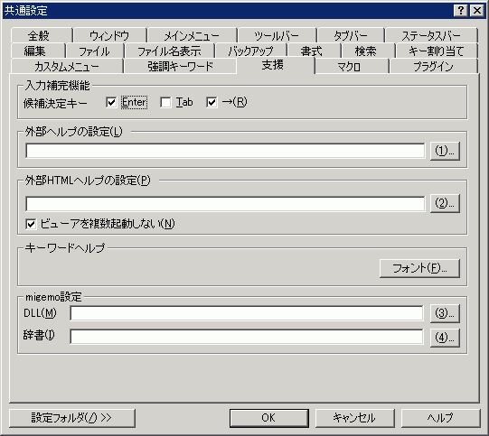

共通設定 『支援』プロパティ
『全般』
『ウィンドウ』
『メインメニュー』
『ツールバー』
『タブバー』
『ステータスバー』
『編集』
『ファイル』
『ファイル名表示』
『バックアップ』
『書式』
『検索』
『キー割り当て』
『カスタムメニュー』
『強調キーワード』
『支援』
『マクロ』
『プラグイン』

各ファイル名が相対パスの場合、設定フォルダからの相対パスとして認識します。ただし、「..」は使えません。
<入力補完機能>
入力補完機能の詳細については、
ここをご覧下さい。
補完される単語はタイプ別に設定できます。
設定方法は
タイプ別設定 『支援』プロパティをご覧下さい。
候補決定キー
補間候補の決定を行うキーです。
■
Enter
□
Tab
■
→
<外部ヘルプの設定>
外部ヘルプの機能を使うとき、ここで指定したWindowsヘルプファイルから選択文字列をキーにしてトピックを検索することができます。
タイプ別設定が優先されます。
HTMLヘルプも設定できます。(sakura:2.0.6.0以降)
<外部HTMLヘルプの設定>
外部HTMLヘルプの機能を使うとき、ここで指定したHTMLヘルプファイルから選択文字列をキーにしてトピックを検索することができます。
タイプ別設定が優先されます。
(例)
原作者の環境で、VC++6.0SE 付属のMSDNライブラリを、外部HTMLヘルプ機能で検索するには、
C:\Program Files\Microsoft Visual Studio\MSDN98\98VS\1041\MSDNVS98.COL
を指定します。
■ビューアを複数起動しない
無効にすると各プロセスごとに別ウィンドウでヘルプを開きます。
<キーワードヘルプ>
[フォント]ボタン
キーワードヘルプをポップアップ表示するときのフォントを指定します。
<migemo設定>
migemo.dll及びdictディレクトリのパスを指定します(sakura.exeと同じ場所に置いた場合にはこの設定は不要です)。
DLL
migemo.dllのパスを指定します。
辞書
dictディレクトリのパスを指定します。
[設定フォルダ]
設定フォルダボタンは、ユーザー別設定を行っている場合のみ表示されます。